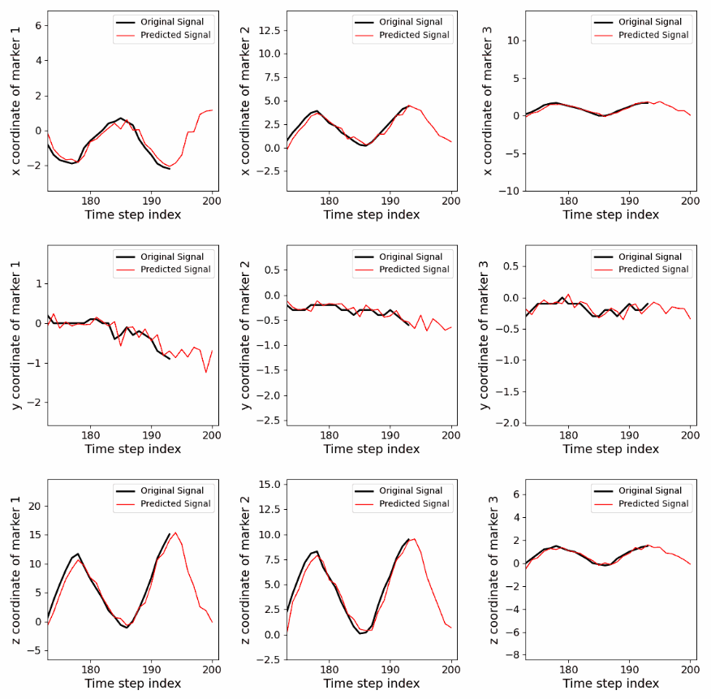
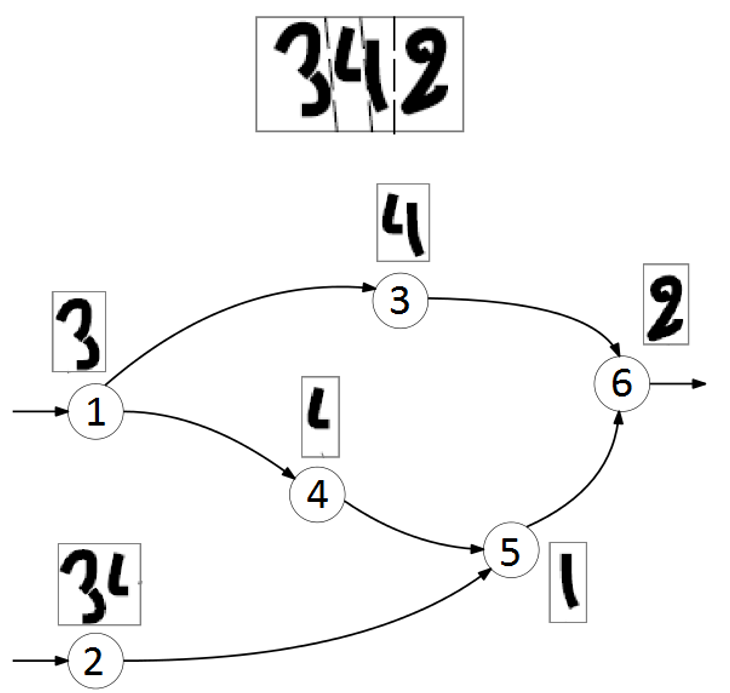

Deep generative modeling and NLP for finance @ Sony Computer Science Labs (Tokyo, 2022)
I developed a method to compute time-dependent loadings in security factor models based on the optical-flow algorithm and trained a VAE to learn and visualize low-dimensional fund-month exposure embeddings, to support GPIF activities. I also researched NLP algorithms (including approaches using transformer-based language models such as BERT and MPNet) for various problems, such as fake news detection and greenwashing evaluation, to help Nomura Asset management assess corporate sustainability.

Cine-MR image forecasting with RNNs and transformers for latency compensation in radiotherapy @ The University of Tokyo (2017-2021, independent work until 2026)
I designed an algorithm to forecast future frames in dynamic chest and liver MR images, based on motion modeling with PCA and temporal dynamics prediction with RNNs trained online and transformer encoders, for safe MR-guided radiotherapy. The proposed approach is modular, interpretable, and can help overcome data scarcity, motion irregularity, and distributional shift between the training and test datasets for population models.

External marker position forecasting using RNNs trained online for safer radiotherapy @ The University of Tokyo (2020-2021, independent work until 2025)
I proposed implementations of online training algorithms for RNNs (UORO, SnAp-1, and DNI) with closed-form simplifications as well as improved accuracy and reduced time/memory complexity. I assessed their ability to forecast the positions of markers on the chest and abdomen for latency compensation and robotic control in radiotherapy for the first time. In our experiments, modern online learning algorithms enabled RNNs to adapt to irregular breathing patterns with limited data and achieve competitive accuracy compared to prior deep learning approaches trained on larger datasets, while keeping inference time relatively low.
UORO article:
Follow-up article (covering also SnAp-1 and DNI):

Simultaneous segmentation and recognition of characters @ Idemia (Île-de-France, 2016)
I prototyped an OCR pipeline in C for degraded text images, consisting of three steps: over-segmentation, character recognition, and shortest-path graph decoding using Viterbi's algorithm to select the most likely string (see the figure above). It achieved 13.4% higher accuracy than the open-source OCR engine Tesseract 3.04. The first step of the pipeline (candidate cut generation) relied on Dijkstra's algorithm, as each pixel was assigned to a node in the graph representation of the image and edge weights were based on pixel intensities and heuristics; I optimized speed using a binary-search-style strategy. Regarding the second step, I implemented from scratch a character-level neural network classifier, trained it on a dataset of ~20k character images, and improved recognition accuracy by ~5% by incorporating a class-conditional Bayesian aspect-ratio prior.

Graph-structured data classification for computer-aided diagnosis in neurology @ Fresnel Institute (Marseille, 2016)
I first derived a generalized likelihood ratio test for binary classification of graph-structured data via Fourier graph transforms, based on prior work from Hu et al. I applied this method to Alzheimer's disease detection, by modeling brain regions in PET images as nodes in a graph with edge weights defined by Gaussian RBF kernels over regional imaging features, and obtained a leave-one-out test F1 score of 0.78 on a dataset of 122 brain scans. Last, I explored optimization of region-independent weights corresponding to each image property to maximize classification accuracy.